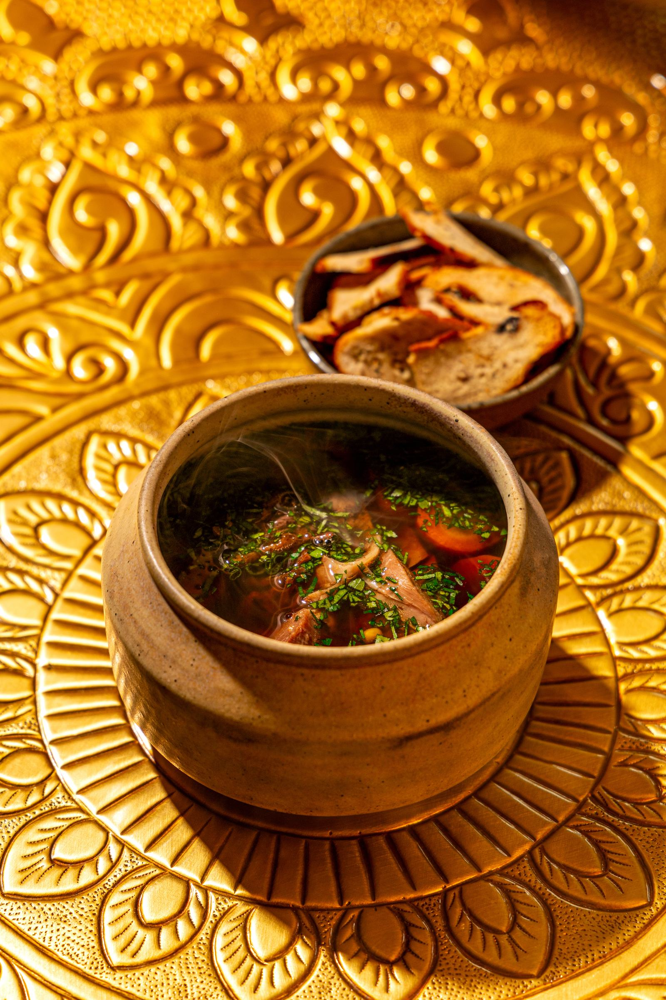

JournalЖурнал
Notes from the road
Recipes we cook, ingredients we chase, and the history that put them on the same table.
Записки с дороги
Рецепты, которые мы готовим, ингредиенты, за которыми охотимся, и история, которая собрала их на одном столе.

The four hours of plov, explained
Why the rice goes in last, why the carrot is cut by hand, and why nobody in Samarkand agrees with anybody in Bukhara.
Read the articleЧетыре часа плова — объясняем
Почему рис закладывают последним, почему морковь режут руками и почему в Самарканде никто не согласен с Бухарой.
Читать статью